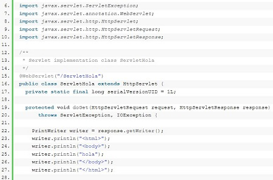
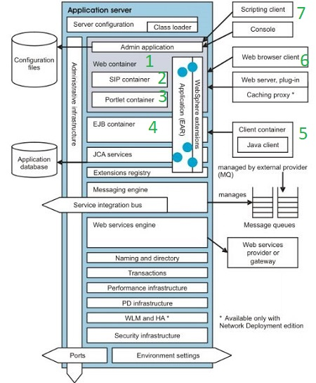
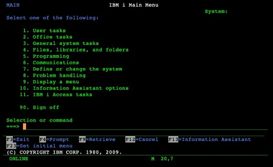
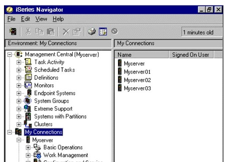

| Referencia | Descripcion | Ejemplo |
|---|---|---|
| Que es un servlet |
un Servlets es el concepto más básico de componente web a nivel de Java EE. Se trata de una clase que genera una página HTML |
 |
| WAS, Servidor de aplicaciones WebSphere |
* WebSphere es una familia de productos de software privado de IBM. * El producto es compatible con componentes de aplicaciones que se ajusten a las especificaciones de Java Platform Entreprise Edition (JEE) * las aplicaciones web se ejecutan en el contenedor web * las aplicaciones web se componen de uno a mas servlets * El contenedor web ejecuta los servlets, archivos JSP y otros tipos de inclusiones del lado del servidor * Cada tiempo de ejecucion del servidor de aplicaciones tiene un contenedor logico que puede modificarse, pero no crearse ni eliminarse 1. * cadenas de transporte de contenedores web cadenas que entran al contenedor web y que constan de un canal de entrada TCP que proporciona la conexion a la red, un canal de entrada HTTP que atiende solicitudes HTTP y un canal de contenedor web que atiende a los servlets y archivos JSP * Procesamiento de los servlets el contenedor web procesa los servlet y genera 2 objetos uno de salida y otro de respuesta y esta clase Java estan los metodos de inicio, proceso y destruccion del servlet y si bien generan HTML tambien puede contener la conexion a BD, filtrar datos atender varios clientes a la vez etc. * Gestion de sesiones soporta javax.servlet.http.HttpSession es decir todo las acciones de los usuarios en el navegador quedan registradas en la sesion 2. * Aplicaciones SIP son programas Java que utilizan al menos un servlet de protocolo de inicio de sesion Session Initiation Protocol (SIP) 3. * Aplicaciones portlet Son servlet Java reutilizable que aparecen a lo largo de las paginas y sirven para brindar acceso a otras aplicaciones, servicio y contenido web diferente. |
 |
|
4. las aplicaciones EJB se ejecutan en el contenedor EJB * En este contenedor se maneja los BEANS de sesion y de entidad * Los BEANS empresariales que manejan la logica de negocio no se comunican directamente con el servidor de apliacion lo hacen por medio de esta interfaz el contenedor EJB Client container En un entorno cliente-servidor: el cliente se comunica con las aplicaciones que esta instalada y se ejecutan en el servidor 5. * El contenedor de clientes se instala por separado del servidor de aplicaciones en la maquina del cliente * En el diagrama se muestra un cliente Java que se ejecuta dentro del contenedor de cliente 6. * Cliente Web o cliente de navegador web En el navegador web el cliente realiza una solicitud al servidor de aplicaciones 7. * Clientes administrativos hay dos tipos: 1. Cliente de secuencia de comandos 2. Consola Administrativa |

|
|
| IBM HTTP Server para i5/OS | ||
| IBM i |
* tambien llamado IBM i es un sistema operativo de IBM * Fue publicado originalmente en 1988 como OS/400, como el único sistema operativo de la línea de sistemas AS/400. Se le cambió el nombre a i5/OS en 2004 |
 |
| Conceptos de i5/OS |
* IBM i5/OS es el sistema operativo de la plataforma System i * System i Navigator es la interfaz gráfica de los clientes Windows. Con System i Navigator, puede utilizar una interfaz gráfica para gestionar y administrar sus sistemas |
 |
| IBM HTTP Server para z/OS | ||
|
* z/OS es el sistema operativo actual de las computadoras centrales de IBM * Del sistema MVT (de 1967) se pasó al MVS en 1974 añadiéndole múltiples espacios de memoria virtual * agregándole a este compatibilidad UNIX se pasó al OS/390 en 1995 * y ampliando a este el direccionamiento de 64 bits se pasó a z/OS en el año 2000 * Programado en PL/X * Tipo de programa sistema operativo tipo Unix |
||
| Consola AIX | ||
| Hay una opcion para no usar archivos SystemOut.log, SystemErr.log, trace.log o activity.log que es configurar el servidor para utilizar la infraestructura de registro y rastreo extensible de alto rendimiento (HPEL) mas info aqui | ||
| la herramienta de wasdmin es un shell de comandos con el fin de administrar todos los artefactos de una célula de IBM WebSphere Application Server |
Antes de usar la consola administrativa wsadmin se debe instalar en el perfil donde se desea ejecutar esto es posible con el script deploymentConsole mas info aqui * cd usr/websphere/AppServer/profiles/bin * ./wsadmin.sh -lang -jython * print Help.AdminApp() * print AdminTask.list() //obtener todas las apliaciones instaladas * print Admin.list("WebSphere:cell=XX,node=XX,server=XX") //obtener todas las apliaciones instaladas en XX JVM * print AdminTask.listServers() //obtener todos los servers.xml de todos los JVM * print Admin.listModules("aplicacionXX") //appname # module URI + and DD URI * print Admin.getDeployStatus("aplicacionXX") * print AdminConfig.list('JDBCProvider') * print AdminConfig.listTemplate('JDBCProvider') //mostrar una lista de ID de objetos * |
|